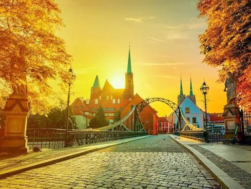

Strona tytułowa  Pobierz przewodnik po Wrocławiu (PDF) Personalizacja stylów strony (JavaScript) Kolor tła: Jasnoszary (domyślny) Kremowy Błękitny Ciemny grafit Kolor tekstu: Czarny (domyślny) Ciemnozielony Granatowy Biały Rodzaj czcionki: Arial (bezszeryfowa) Times New Roman (szeryfowa) Courier New (stała szerokość) Georgia Zastosuj style Przywróć domyślne Wybierz parametry powyżej, aby zmienić wygląd strony.